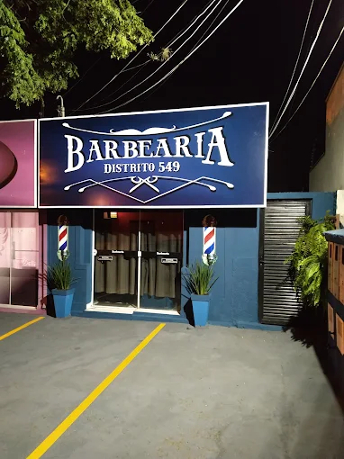

Corte de cabelo · Barba · Americana SP
A Distrito 549 Barbearia fica na Vila Santa Catarina, em Americana. Oferecemos corte de cabelo e cuidados com a barba, com atenção ao estilo e ao acabamento de cada cliente. Nas fotos, você pode conhecer alguns dos nossos trabalhos, como degradês, cortes clássicos e cortes com risco. Se tiver uma referência do visual que procura, mostre para o barbeiro e converse sobre os detalhes.
Para combinar seu próximo horário, fale com a gente pelo WhatsApp. Você pode consultar corte de cabelo, barba ou os dois serviços juntos. Informe o dia e o período de sua preferência para conferir a disponibilidade. Os valores e os horários de atendimento são informados diretamente pela barbearia. Estamos na Rua Tuiuti, 549.
Clique no botão abaixo para consultar valores e combinar seu horário.
O agendamento é confirmado diretamente com a barbearia pelo WhatsApp.